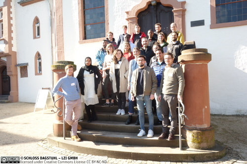

Participant (Invited) · Schloss Dagstuhl

Attended Dagstuhl Seminar 22091 — "AI for the Social Good" — an invitation-only research seminar held at Schloss Dagstuhl bringing together 22 AI/ML researchers and NGO representatives. The seminar combined high-level talks on AI and machine learning concepts with a hands-on hackathon where researchers and practitioners collaborated on real-world humanitarian challenges including air quality improvement, agricultural productivity, healthcare transformation, and poverty alleviation.
The week-long format was designed to increase AI maturity within NGOs while grounding researchers in the non-standard conditions of humanitarian work — missing data, competing objectives, and deployment constraints in low-resource settings. Organizers included researchers from Imperial College London, Carnegie Mellon University, and Google DeepMind, alongside Oxfam Novib. Participants came from organisations including Save the Children, the Netherlands Red Cross, and AirQo.
Seminar report — Dagstuhl Reports Vol. 12, Issue 2, pp. 134–142 Seminar page — Dagstuhl